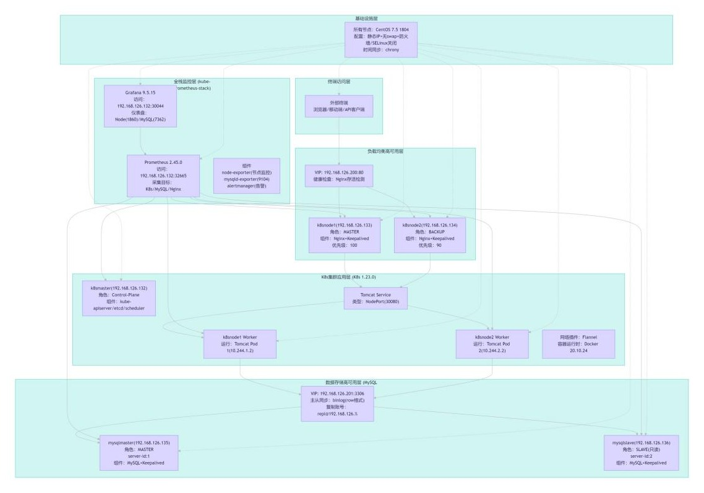

项目目标
模拟企业容器平台，验证集群部署、服务高可用、数据库主从和监控可视化链路。
Project Summary
模拟企业容器平台，验证集群部署、服务高可用、数据库主从和监控可视化链路。
Linux、Docker、Kubernetes、Flannel、Nginx、Keepalived、MySQL、Prometheus、Grafana。
负责节点初始化、集群网络、服务入口、数据库主从、监控组件搭建和运行验证。
完成 3 节点集群、2 台 MySQL 和 Prometheus/Grafana 监控；项目已完成实施并运行正常。
为了验证企业容器平台从节点准备、集群部署到服务运行和监控可视化的完整链路，搭建 Kubernetes Master + Node 节点，并补充 Keepalived、Nginx、MySQL 主从、Prometheus、Grafana 等组件。
完成基础节点初始化、Master 控制平面部署、Node 节点加入、Flannel 网络配置，并配置 Keepalived + Nginx 入口、MySQL 服务、Prometheus + Grafana 监控面板，同时整理命令、截图和问题处理记录。
Architecture
架构覆盖 Kubernetes 集群、应用访问高可用、MySQL 主从和 Prometheus/Grafana 监控。

Records
实施记录覆盖节点初始化、集群部署、服务高可用、数据库主从和监控平台搭建。
系统安装、磁盘规划、网络配置和初始化脚本。
阅读记录控制平面基础环境、Docker、kubeadm 和集群初始化。
阅读记录工作节点基础配置、IPVS、时间同步和加入集群。
阅读记录应用访问入口、NodePort、反向代理和 VIP 验证。
阅读记录MySQL 安装、主从复制、binlog 和高可用验证。
阅读记录Helm、kube-prometheus-stack、Grafana 暴露和指标采集。
阅读记录主要难点集中在环境初始化、组件启动验证、镜像拉取、网络插件、服务访问链路和监控组件状态排查。
通过节点状态、NodePort 服务访问、Keepalived VIP、MySQL 主从同步和 Grafana 监控面板检查部署结果。